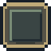
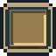

Image-backed buttons. Hold or tap any symbol to see the pressed color. This gallery is a visual testing page; the game retains keyboard and touch input on the main page.

Normal
PressedSprites are transparent SVG images with crisp pixel contours. All visual dimensions are independent from interaction hit areas, and the seven keys live on one shared deck image.